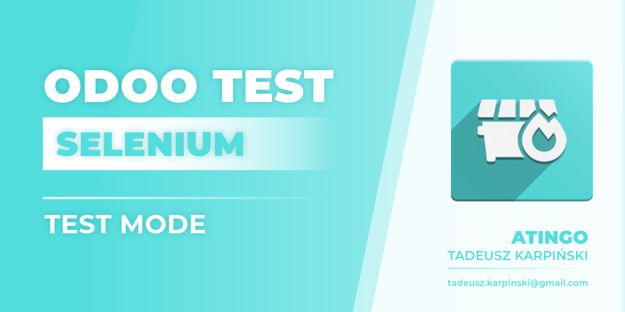
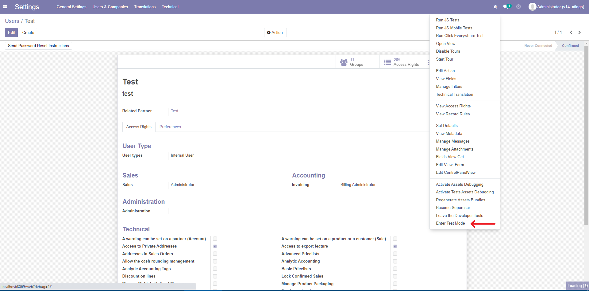
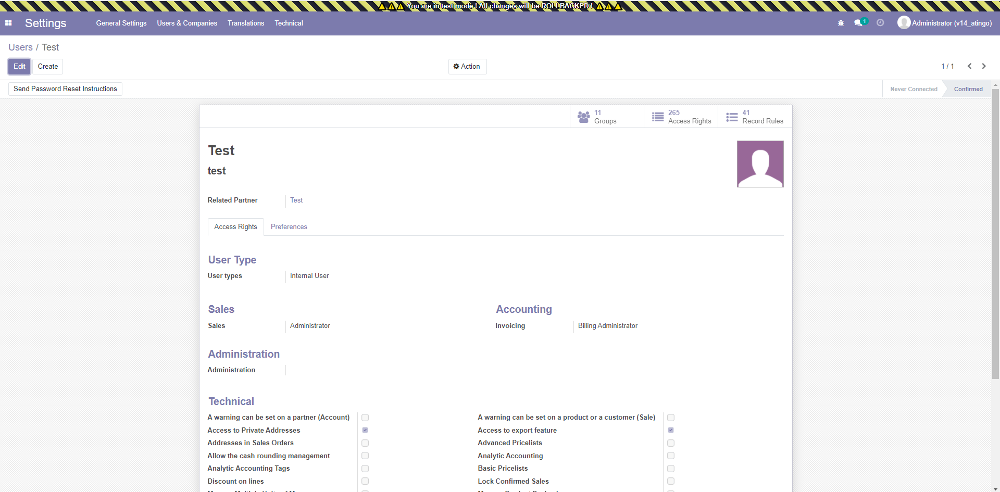
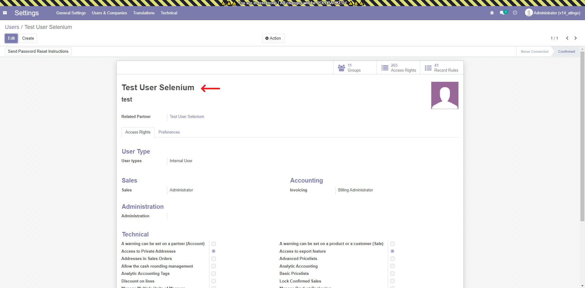
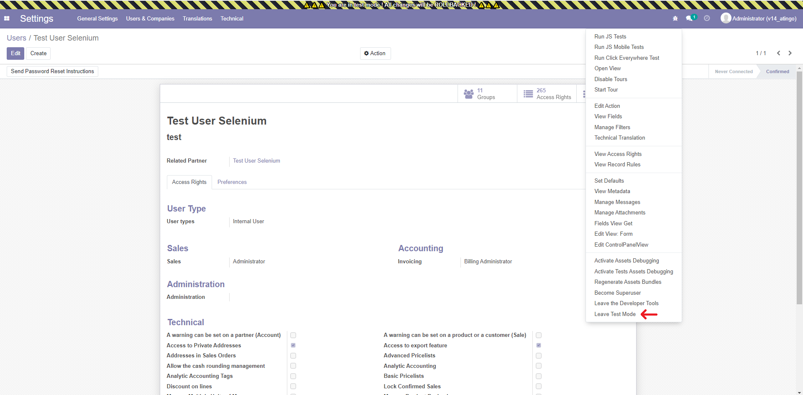
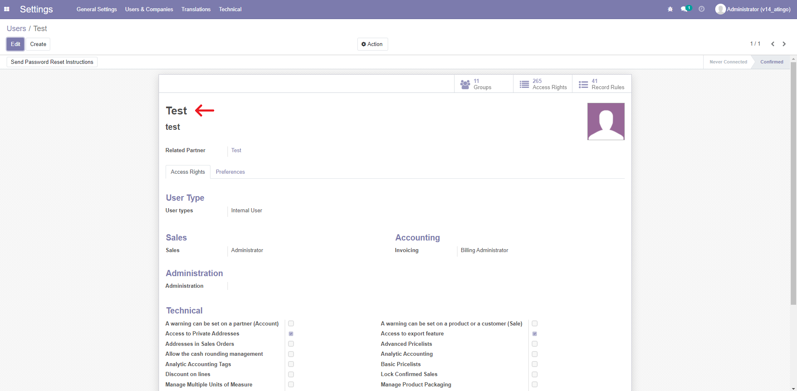

<!-- © 2022 Atingo Tadeusz Karpiński -->
<!-- License OPL-1 (https://www.odoo.com/documentation/13.0/legal/licenses.html). -->

<div class="container" style="font-weight: 400 !important; font-size: 1rem !important;">
    <div class="col-sm-12">
        
        <h2 class="oe_slogan" style="color:#875A7B;">Odoo Tests Selenium Test Mode</h2>
        <p>With this module you can enter Test Mode. With Test Mode enabled, all changes on the database won't be commited. Leaving the Test Mode will rollback all changes, so the database won't be affected by your test. This module works well with Selenium IDE. It affects all users! In Test Mode bus.bus and emails are blocked. Be responsible and use it on test instances ONLY!</p>
        <h2 class="oe_slogan" style="color:#875A7B;">Use Case</h2>
        <p>User can register an action in Selenium IDE, for example creation of a new user. It is impossible to run the registered test, because odoo won't create user with the same login. With Test Mode Selenium can always be ran, because test data will be rollbacked. Restaring odoo server will automatically leave the test mode and rollback database.</p>
        <h2 class="oe_slogan" style="color:#875A7B;">Example</h2>
        <br/>
        <p>User opens odoo in debug mode and select <b>Enter Test Mode</b></p>
        
        <br/>
        <p>After clicking this menu item all users will be notified, that Test Mode is enabled. New bar will be shown on the top.</b></p>
        
        <br/>
        <p>Now user can change any data in the system. It will be stored until leaving the Test Mode. User can refresh the website, or even close it. In this example the name of the user is changed and browser is refreshed.</b></p>
        
        <br/>
        <p>In the next step user exits the Test Mode.</b></p>
        
        <br/>
        <p>All database changes are rollbacked. Previous user's name is restored</b></p>
        
        <br/>
        <p>In case of any questions don't hesitate to email me: <b>tadeusz.karpinski@gmail.com</b></p>
    </div>
</div>